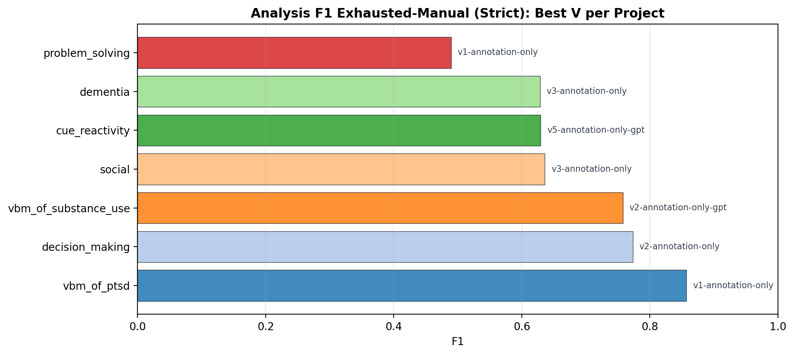
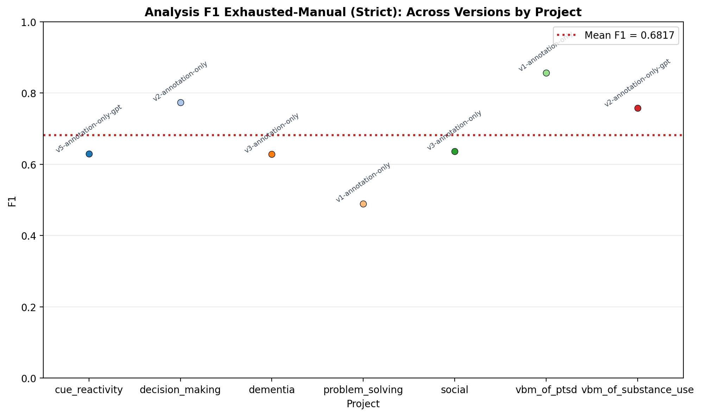

Generated at 2026-07-29T17:30:52.542500Z. This dashboard re-runs compare_analyses_to_benchmark.py for each selected strict annotation-only run and aggregates parsing + annotation metrics.
| Project | Selection | Version | Selected Run | Re-run | Return Code | Reason | Log |
|---|---|---|---|---|---|---|---|
| cue_reactivity | selected | 5 | /home/zorro/repos/autonima-results/projects/cue_reactivity/v5-annotation-only-gpt | success | 0 | Selected highest annotation-only fallback candidate | log |
| decision_making | selected | 2 | /home/zorro/repos/autonima-results/projects/decision_making/v2-annotation-only | success | 0 | Selected highest strict vN-annotation-only candidate | log |
| dementia | selected | 3 | /home/zorro/repos/autonima-results/projects/dementia/v3-annotation-only | success | 0 | Selected highest strict vN-annotation-only candidate | log |
| emotional_regulation_2022 | skipped | | skipped | No directories matched annotation-only pattern ^vN-annotation-only.*$ | n/a | ||
| executive_function | skipped | | skipped | No directories matched annotation-only pattern ^vN-annotation-only.*$ | n/a | ||
| problem_solving | selected | 1 | /home/zorro/repos/autonima-results/projects/problem_solving/v1-annotation-only | success | 0 | Selected highest strict vN-annotation-only candidate | log |
| social | selected | 3 | /home/zorro/repos/autonima-results/projects/social/v3-annotation-only | success | 0 | Selected highest strict vN-annotation-only candidate | log |
| template_ | skipped | | skipped | No directories matched annotation-only pattern ^vN-annotation-only.*$ | n/a | ||
| vbm_of_ptsd | selected | 1 | /home/zorro/repos/autonima-results/projects/vbm_of_ptsd/v1-annotation-only | success | 0 | Selected highest strict vN-annotation-only candidate | log |
| vbm_of_substance_use | selected | 2 | /home/zorro/repos/autonima-results/projects/vbm_of_substance_use/v2-annotation-only-gpt | success | 0 | Selected highest annotation-only fallback candidate | log |
CSV: project_selection.csv
Manual matched % is computed as (accepted + uncertain) / manual_analyses_total from match_results_overall.json.
Table-only baseline groups raw extracted coordinates by source table before fuzzy matching, representing performance if table/contrast parsing were skipped.
| Project | Matched % Bar | Matched % | Matched / Manual | Table-Only % Bar | Table-Only % | Table-Only / Manual | Fuzzy Report | Annotation Summary |
|---|---|---|---|---|---|---|---|---|
| decision_making | 1.000 | 29/29 | 0.000 | 0/5 | analysis_fuzzy_matching_report.html | overall_submeta_summary.html | ||
| vbm_of_ptsd | 0.909 | 10/11 | 0.636 | 7/11 | analysis_fuzzy_matching_report.html | overall_submeta_summary.html | ||
| problem_solving | 0.901 | 128/142 | 0.324 | 46/142 | analysis_fuzzy_matching_report.html | overall_submeta_summary.html | ||
| social | 0.817 | 472/578 | 0.293 | 169/576 | analysis_fuzzy_matching_report.html | overall_submeta_summary.html | ||
| vbm_of_substance_use | 0.750 | 45/60 | 0.441 | 26/59 | analysis_fuzzy_matching_report.html | overall_submeta_summary.html | ||
| cue_reactivity | 0.722 | 151/209 | 0.452 | 94/208 | analysis_fuzzy_matching_report.html | overall_submeta_summary.html | ||
| dementia | 0.545 | 6/11 | 0.182 | 2/11 | analysis_fuzzy_matching_report.html | overall_submeta_summary.html |
CSV: parsing_metrics_by_project.csv
Modes: strict (accepted) and combined. Levels: study and analysis. Analysis is shown for both matched-only baseline and exhausted-manual-assumption variants.
| Metric Slice | Projects | Annotations | TP | FP | FN | TN | Precision | Recall | F1 | Accuracy | Activated PMIDs | Added Assumed Negatives |
|---|---|---|---|---|---|---|---|---|---|---|---|---|
| Study (Strict) | 7 | 27 | 684 | 134 | 100 | 694 | 0.836 | 0.872 | 0.854 | 0.855 | 0 | 0 |
| Study (Combined) | 7 | 27 | 696 | 143 | 101 | 705 | 0.830 | 0.873 | 0.851 | 0.852 | 0 | 0 |
| Analysis Matched-Only (Strict) | 7 | 27 | 1304 | 211 | 466 | 1749 | 0.861 | 0.737 | 0.794 | 0.818 | 0 | 0 |
| Analysis Matched-Only (Combined) | 7 | 27 | 1351 | 218 | 480 | 1795 | 0.861 | 0.738 | 0.795 | 0.818 | 0 | 0 |
| Analysis Exhausted-Manual (Strict) | 7 | 27 | 1304 | 1170 | 466 | 3851 | 0.527 | 0.737 | 0.615 | 0.759 | 927 | 3061 |
| Analysis Exhausted-Manual (Combined) | 7 | 27 | 1351 | 1177 | 480 | 3897 | 0.534 | 0.738 | 0.620 | 0.760 | 927 | 3061 |
CSV: annotation_aggregates.csv
| Project | Study F1 (Strict) | Study F1 (Combined) | Analysis F1 Matched-Only (Strict) | Analysis F1 Exhausted-Manual (Strict) | Analysis F1 Matched-Only (Combined) | Analysis F1 Exhausted-Manual (Combined) | Fuzzy Report | Annotation Summary |
|---|---|---|---|---|---|---|---|---|
| cue_reactivity | analysis_fuzzy_matching_report.html | overall_submeta_summary.html | ||||||
| decision_making | analysis_fuzzy_matching_report.html | overall_submeta_summary.html | ||||||
| dementia | analysis_fuzzy_matching_report.html | overall_submeta_summary.html | ||||||
| problem_solving | analysis_fuzzy_matching_report.html | overall_submeta_summary.html | ||||||
| social | analysis_fuzzy_matching_report.html | overall_submeta_summary.html | ||||||
| vbm_of_ptsd | analysis_fuzzy_matching_report.html | overall_submeta_summary.html | ||||||
| vbm_of_substance_use | analysis_fuzzy_matching_report.html | overall_submeta_summary.html |


emotional_regulation_2022: No directories matched annotation-only pattern ^vN-annotation-only.*$executive_function: No directories matched annotation-only pattern ^vN-annotation-only.*$template_: No directories matched annotation-only pattern ^vN-annotation-only.*$No re-run failures.